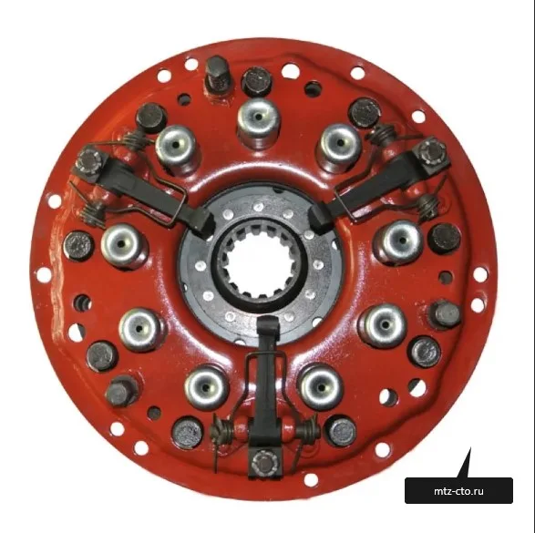
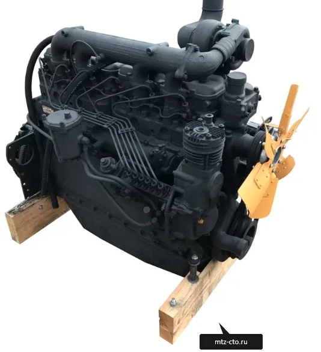
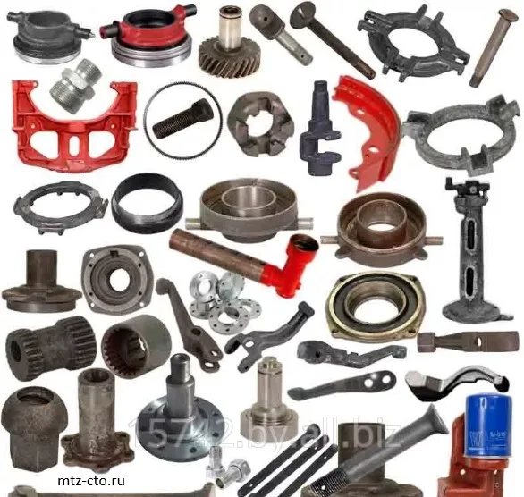
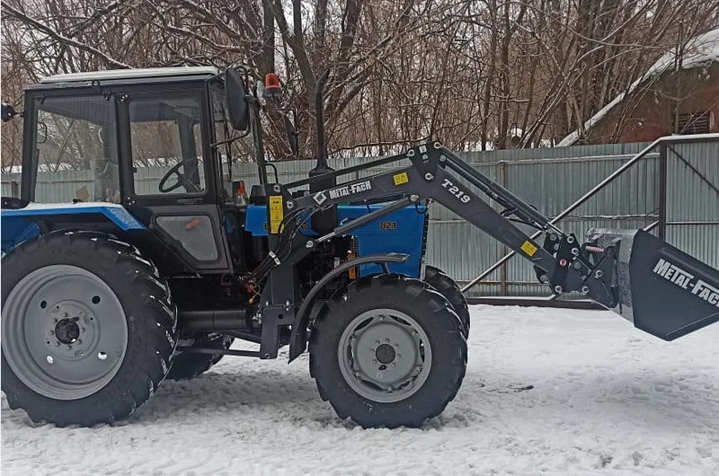
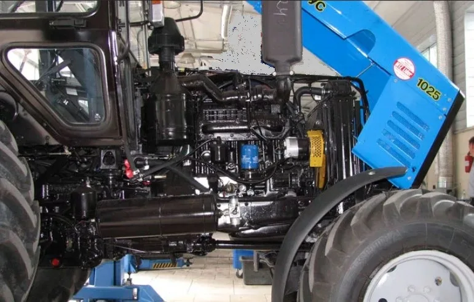

Сервис спецтехники
Ремонт тракторов МТЗ и погрузчиков
Приезжайте в мастерскую в Котельниках или вызовите мастера на объект в Москве и области.
Выезд к техникеМосква и Московская область
Смета до ремонтаСогласуем работы и запчасти
ГарантияНа ремонт и наши запчасти
Услуги техцентра

Дизельные двигатели
Ремонт двигателя
Двигатель дымит, стучит или плохо заводится? Опишите, что заметили.
Узнать стоимостьРемонт КПП
Если передача не включается или коробка гудит, укажите модель трактора и на какой передаче слышен шум.
Оставить заявкуТехническое обслуживание
При записи на плановое или сезонное ТО трактора диагностика уже входит в стоимость.
Оставить заявкуЭлектрика и тормоза
Напишите, что перестало работать. Например, стартер не крутит или трактор уводит в сторону при торможении.
Оставить заявкуГидравлика и навесное оборудование
Ковш медленно поднимается или опускается сам? Укажите модель машины и какое оборудование на ней стоит.
Оставить заявку
Склад и поставка под заказ
Подберём запчасть по модели или фото
Нужны фильтры, шестерня КПП или гидронасос? Пришлите артикул или фото детали и модель машины. Проверим, подойдёт ли запчасть, сколько она стоит и когда её можно забрать.
Узнать цену и наличие
МТЗ-82 / МУП-351
Аренда трактора с навесным оборудованием
Есть ковш, отвал, щётка и бочка. Трактор можно взять с водителем. Напишите, где и когда он нужен.
Уточнить свободные даты
Выездной ремонт
Трактор встал на объекте?
Назовите модель, адрес и что сломалось. Мастер скажет, можно ли починить машину на месте, и договорится с вами о выезде.
Вызвать мастераВопросы о ремонте
Как узнать стоимость и сроки?
По модели и описанию поломки мастер назовёт примерную цену. После осмотра вы узнаете, что нужно менять, сколько это стоит и когда можно забрать машину.
Какие модели вы обслуживаете?
Тракторы МТЗ-320, МТЗ-80 и МТЗ-82, ВТЗ-2032 и 2048, погрузчики Амкодор-333 и 342, МКСМ-800 и АНТ-1000. По другим моделям позвоните мастеру.
Можно ли прислать фото или видео?
Фото до 1 МБ можно приложить к заявке. Видео отправьте на 89771314213@mail.ru. В письме укажите модель и ваш телефон.
Какая гарантия на работы?
Даём гарантию на ремонт и на запчасти, которые вы купили и установили у нас. Срок гарантии по вашему ремонту уточнит мастер.
Как нас найти
Московская область, г. Котельники,
мкр. Силикат, Промзона, стр. 3/1
В будни с 8:00 до 17:00
Если хотите приехать в выходные, сначала позвоните.